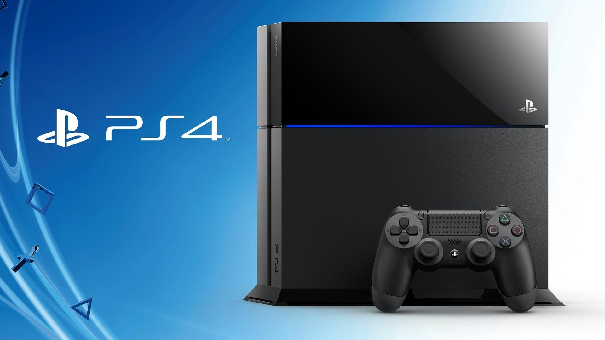

PLAYSTATION 4

Introduction
The PS4 is the most powerful games console on the planet and it's now been on the shelves and in living rooms for over seven months.
With more graphical power than the Xbox One, 32 times more system memory than the PS3 and a firm focus on pure gaming experiences rather than media mojo, the PS4 has established itself as the next-gen console to beat.
It's a games console built by gamers for gamers. It won the hearts and minds of many from the word go, with lots of prospective next-genners left feeling alienated by some of Microsoft's bizarre policies and choices for the Xbox One - many of which were reversed as a result of a backlash.
Coming in at £349, the PS4 is the same price as Microsoft's Xbox One bundle without Kinect. It doesn't come with the PlayStation Camera but this can be bought separately for £45 if you so wish.
Performance
CPU x86-64
AMD Jaguar
GPU 1.84
TFLOPS
RAM 8 GB
GDDR5
A single-chip custom processor ensures that your games run without a glitch while the 8 core Jaguar low power x86-64 AMD CPU allows for a smooth flow. An 8GB Graphics Card allows for an incredible gaming experience, supporting the most superior games. A 1.84 TFLOPS, AMD next-generation Radeon based graphics engine further enhances the experience.
Software
Gaming on the PS4 is made easier with the console's smart software.
Automatic Background Updates
Updates to the PlayStation 4 are downloaded and stored in the background, facilitating ease of use.
PlayAsYouDownload
Revolutionizing the gaming experience is the PlayAsYouDownload feature that allows you to play a game just as it starts downloading to your system.
Personalised Content
A personalized experience is brought on by the PS4 as it understands how one plays and adjusts the content accordingly.
Play Used Games
Opening the gaming world up for you is the Play Used Games feature, thanks to which you can sell a game you own, lend it to a friend or keep it for yourself.